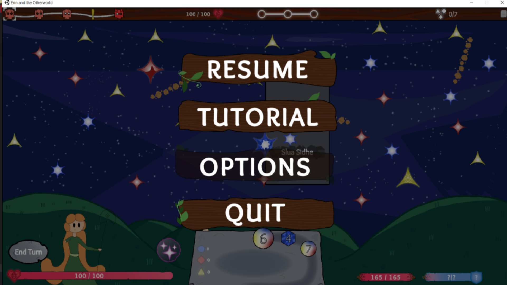
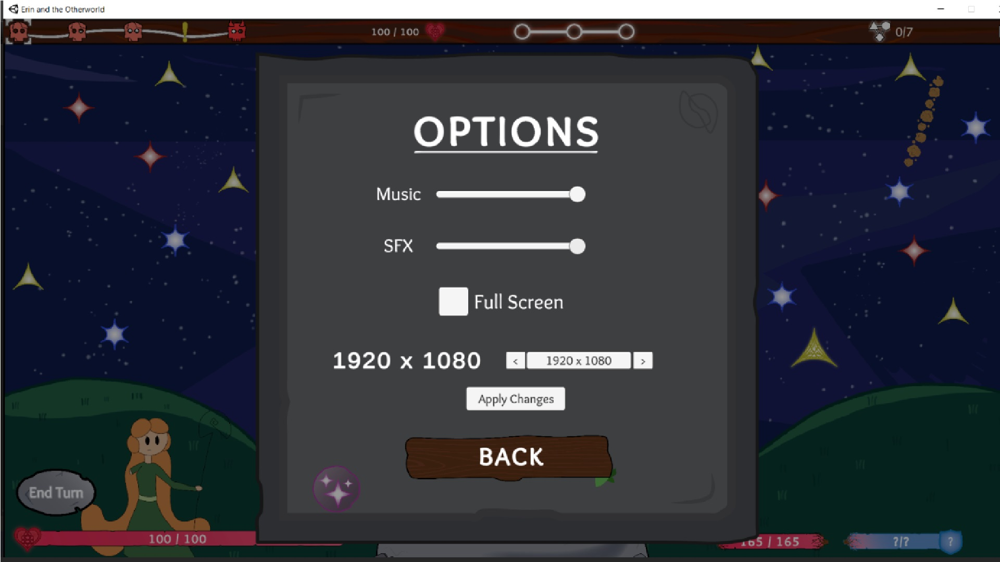

Erin and the Other World
Role: Gameplay Programmer | Team Size: 12 (4 Programmers, 2 Designers, 3 Artists, 2 Sound Designers, 1 Producer)
Led UI development and gameplay mechanics implementation in a roguelike deckbuilder. Designed interactive UI systems that improved user engagement, achieving a 30% reduction in UI navigation time.
Technologies Used
Game Engine: Unity | Programming: C# | Version Control: GitHub | UI Framework: Unity UI Toolkit | Animation: DOTween
1 / 4

Main Menu - User-friendly layout optimized for quick navigation
2 / 4

Settings Menu - Includes dynamic resolution scaling & volume control
3 / 4
Bonus Tracker UI - Animated feedback for real-time player stats
4 / 4

Player Flash - Visual feedback effect for damage indication
Key Contributions
- UI Development: Designed and implemented UI elements, including interactive menus and player progression tracking.
- Game Feedback Systems: Integrated animations and UI elements using DOTween, enhancing visual clarity.
- Performance Optimization: Reduced UI latency by 40% through efficient rendering and event-driven programming.
- Collaborative Development: Worked closely with artists and designers to ensure seamless UI/UX experience.
Development Breakdown
UI/UX Programming
- Developed an intuitive menu system with dynamic resolution scaling and accessibility settings.
- Optimized UI elements to improve user experience, reducing confusion by 30% in playtests.
- Implemented an in-game UI bar that displays health, mana, experience, and currency in real-time.
Tweening & Animation Programming
- Created smooth UI animations using DOTween for a polished feel.
- Developed a sprite-flash effect when taking damage to enhance combat feedback.
- Integrated movement and scaling effects for key UI elements, improving visual engagement.
Performance & Optimization
- Refactored UI rendering logic, reducing processing overhead by 40%.
- Implemented event-driven UI updates to minimize unnecessary calls, boosting efficiency.